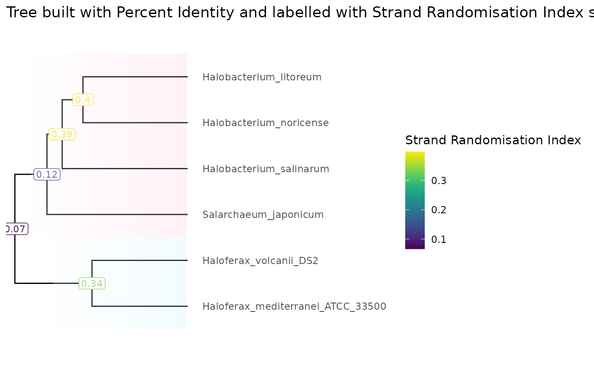
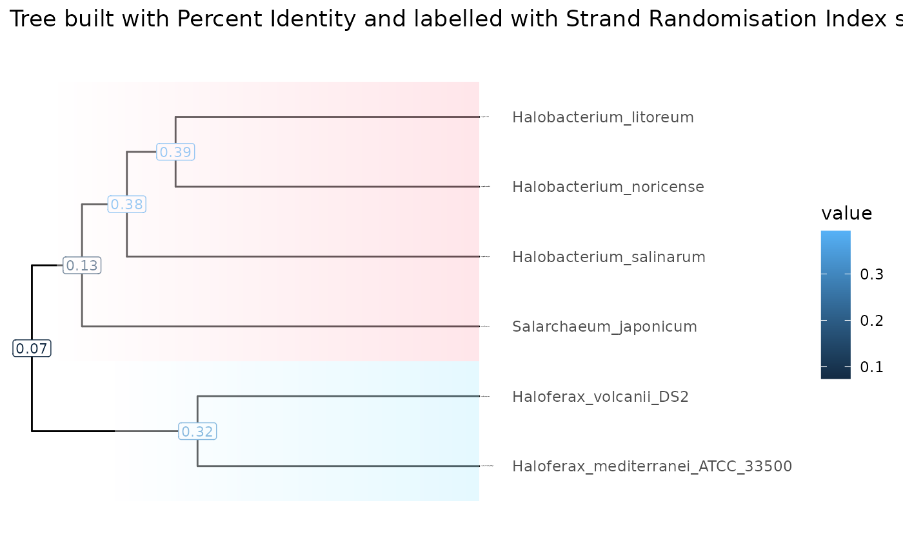

knitr::opts_chunk$set(cache = TRUE)
knitr::opts_knit$set(verbose = TRUE)Introduction
The ScrambledTreeBuilder package consists of numerous data formatting functions for phylogenetic tree building.
Load Package
Whilst the ScrambledTreeBuilder package contains all necessary functions required to convert data from .yaml files to a data type suitable for phylogenetic trees, loading ggplot2 will allow for greater customization of the final tree products.
Example Data
This package utilizes example .yaml files from halobacteria genome comparison data. In regards to genome scrambling, many studies have showcased significant genome rearrangments in such halobacteria species due to dozens of insertion sequence families. Thus, the ScrambledTreeBuilder package will be useful in uncovering relationships amongst such species.
Upon performing an all vs. all genome comparison between six halobacteria species using the Nextflow genome pairwise alignment pipeline and an input file script for GenomicBreaks, we have multiple .yaml files stored in a directory called ‘extdata/PairwiseComparisons’. We will load this data into RStudio with the variable name ‘yamlFileData’.
resultsDir <- system.file("extdata/PairwiseComparisons", package = "ScrambledTreeBuilder")
yamlFileData <- list.files(resultsDir, pattern = "*.yaml.bz2", full.names = TRUE)
names(yamlFileData) <- yamlFileData |> basename() |> sub(pat = ".yaml.bz2", rep="")Next, we can use the ‘formatStats()’ function to transform the .yaml files into a single dataframe. Having a dataframe containing our species information is important, as this will allow us to extract specific columns/variables and plot them onto our phylogenetic trees later.
exDataFrame <- formatStats(yamlFileData)We will need to further process our data by transforming the dataframe into a matrix. We can perform this task with the ‘makeMatrix()’ function. This function can be quite useful, as you may use it to both create the matrix which you wish to build your tree with and to create the matrix to store species information for a particular variable. For example, we may want to build the tree based on percent identity values, which we store in ‘treeMatrix’. Then, we may want to plot strand randomisation index scores on the trees to study genome scrambling, which we store in ‘valueMatrix’.
valuesToBuildTheTree <- "percent_identity_global"
treeMatrix <- makeMatrix(exDataFrame, valuesToBuildTheTree, 100, 50)
treeMatrix
#> Halobacterium_noricense
#> Halobacterium_noricense 100.00000
#> Halobacterium_salinarum 74.74168
#> Haloferax_mediterranei_ATCC_33500 66.51318
#> Haloferax_volcanii_DS2 69.96063
#> Salarchaeum_japonicum 71.94129
#> Halobacterium_litoreum 78.87231
#> Halobacterium_salinarum
#> Halobacterium_noricense 74.72164
#> Halobacterium_salinarum 100.00000
#> Haloferax_mediterranei_ATCC_33500 67.06152
#> Haloferax_volcanii_DS2 68.47755
#> Salarchaeum_japonicum 71.82141
#> Halobacterium_litoreum 75.78684
#> Haloferax_mediterranei_ATCC_33500
#> Halobacterium_noricense 68.55420
#> Halobacterium_salinarum 67.06788
#> Haloferax_mediterranei_ATCC_33500 100.00000
#> Haloferax_volcanii_DS2 80.98460
#> Salarchaeum_japonicum 68.70265
#> Halobacterium_litoreum 68.88111
#> Haloferax_volcanii_DS2 Salarchaeum_japonicum
#> Halobacterium_noricense 69.98252 72.22600
#> Halobacterium_salinarum 68.48654 71.57797
#> Haloferax_mediterranei_ATCC_33500 80.80996 68.50482
#> Haloferax_volcanii_DS2 100.00000 69.84616
#> Salarchaeum_japonicum 69.87968 100.00000
#> Halobacterium_litoreum 70.25591 72.76736
#> Halobacterium_litoreum
#> Halobacterium_noricense 78.80471
#> Halobacterium_salinarum 75.89491
#> Haloferax_mediterranei_ATCC_33500 68.49688
#> Haloferax_volcanii_DS2 70.22052
#> Salarchaeum_japonicum 72.77139
#> Halobacterium_litoreum 100.00000
valuesToPlaceOnLabels <- "index_avg_strandRand"
valueMatrix <- makeMatrix(exDataFrame, valuesToPlaceOnLabels, 1, 0.5)
valueMatrix
#> Halobacterium_noricense
#> Halobacterium_noricense 1.00000000
#> Halobacterium_salinarum 0.23871495
#> Haloferax_mediterranei_ATCC_33500 0.04880815
#> Haloferax_volcanii_DS2 0.02784920
#> Salarchaeum_japonicum 0.11476675
#> Halobacterium_litoreum 0.39885460
#> Halobacterium_salinarum
#> Halobacterium_noricense 0.23860920
#> Halobacterium_salinarum 1.00000000
#> Haloferax_mediterranei_ATCC_33500 0.07503800
#> Haloferax_volcanii_DS2 0.13530080
#> Salarchaeum_japonicum 0.06630175
#> Halobacterium_litoreum 0.53733160
#> Haloferax_mediterranei_ATCC_33500
#> Halobacterium_noricense 0.04765400
#> Halobacterium_salinarum 0.07367205
#> Haloferax_mediterranei_ATCC_33500 1.00000000
#> Haloferax_volcanii_DS2 0.33807060
#> Salarchaeum_japonicum 0.10473430
#> Halobacterium_litoreum 0.07850880
#> Haloferax_volcanii_DS2 Salarchaeum_japonicum
#> Halobacterium_noricense 0.02749270 0.1146204
#> Halobacterium_salinarum 0.13299345 0.0671487
#> Haloferax_mediterranei_ATCC_33500 0.33675900 0.1063006
#> Haloferax_volcanii_DS2 1.00000000 0.0044876
#> Salarchaeum_japonicum 0.00848495 1.0000000
#> Halobacterium_litoreum 0.04474345 0.1884153
#> Halobacterium_litoreum
#> Halobacterium_noricense 0.39714395
#> Halobacterium_salinarum 0.53626875
#> Haloferax_mediterranei_ATCC_33500 0.08857840
#> Haloferax_volcanii_DS2 0.04606195
#> Salarchaeum_japonicum 0.18109200
#> Halobacterium_litoreum 1.00000000Using the ‘treeMatrix’, we will create an hclust object and use this to produce a tibble dataset. Transforming into a tibble dataset is necessary as this will allow us to add the variable from our ‘valueMatrix’ onto the tree with correct label placement on each node without changing the structure of the tree. Once we have the tibble dataset, we can utilize the ‘makeValueTibble()’ function to add the value from our ‘valueMatrix’ to the tibble data.
HClust <- hclust(dist(treeMatrix), method = "complete")
Tibble <- tidytree::as_tibble(tidytree::as.phylo(HClust))
Tibble
#> # A tbl_tree abstraction: 11 × 4
#> # which can be converted to treedata or phylo
#> # via as.treedata or as.phylo
#> parent node branch.length label
#> <int> <int> <dbl> <chr>
#> 1 11 1 15.0 Halobacterium_noricense
#> 2 10 2 18.0 Halobacterium_salinarum
#> 3 8 3 13.7 Haloferax_mediterranei_ATCC_33500
#> 4 8 4 13.7 Haloferax_volcanii_DS2
#> 5 9 5 20.1 Salarchaeum_japonicum
#> 6 11 6 15.0 Halobacterium_litoreum
#> 7 7 7 NA NA
#> 8 7 8 11.1 NA
#> 9 7 9 4.62 NA
#> 10 9 10 2.19 NA
#> 11 10 11 2.98 NA
tibbleWithValue <- makeValueTibble(Tibble, valueMatrix, colname = "Strand_Randomisation_Index")
tibbleWithValue
#> # A tbl_tree abstraction: 11 × 5
#> # which can be converted to treedata or phylo
#> # via as.treedata or as.phylo
#> parent node branch.length label Strand_Randomisation…¹
#> <int> <int> <dbl> <chr> <dbl>
#> 1 11 1 15.0 Halobacterium_noricense NA
#> 2 10 2 18.0 Halobacterium_salinarum NA
#> 3 8 3 13.7 Haloferax_mediterranei_ATC… NA
#> 4 8 4 13.7 Haloferax_volcanii_DS2 NA
#> 5 9 5 20.1 Salarchaeum_japonicum NA
#> 6 11 6 15.0 Halobacterium_litoreum NA
#> 7 7 7 NA NA 0.0666
#> 8 7 8 11.1 NA 0.337
#> 9 7 9 4.62 NA 0.121
#> 10 9 10 2.19 NA 0.387
#> 11 10 11 2.98 NA 0.397
#> # ℹ abbreviated name: ¹Strand_Randomisation_Index
tibbleWithMultipleValues <- makeValueTibble(tibbleWithValue, treeMatrix, colname = "Percent_Identity")
tibbleWithMultipleValues
#> # A tbl_tree abstraction: 11 × 6
#> # which can be converted to treedata or phylo
#> # via as.treedata or as.phylo
#> parent node branch.length label Strand_Randomisation…¹ Percent_Identity
#> <int> <int> <dbl> <chr> <dbl> <dbl>
#> 1 11 1 15.0 Halobacte… NA NA
#> 2 10 2 18.0 Halobacte… NA NA
#> 3 8 3 13.7 Haloferax… NA NA
#> 4 8 4 13.7 Haloferax… NA NA
#> 5 9 5 20.1 Salarchae… NA NA
#> 6 11 6 15.0 Halobacte… NA NA
#> 7 7 7 NA NA 0.0666 68.6
#> 8 7 8 11.1 NA 0.337 80.8
#> 9 7 9 4.62 NA 0.121 72.2
#> 10 9 10 2.19 NA 0.387 75.3
#> 11 10 11 2.98 NA 0.397 78.8
#> # ℹ abbreviated name: ¹Strand_Randomisation_IndexFinally, we can use the ‘tibbleWithValue’ and ‘tibbleWithMultipleValues’ datasets to build the tree. In our case, we will generate a tree built based on percent identity values with strand randomisation scores labeled on all nodes using ‘tibbleWithValue’. ‘tibbleWithMultipleValues’ will allow us to plot both strand randomisation index scores and percent identity scores on the tree.
SingleValueTree <- visualizeTree(tibbleWithValue, tibbleWithValue$Strand_Randomisation_Index)
#> Registered S3 methods overwritten by 'treeio':
#> method from
#> MRCA.phylo tidytree
#> MRCA.treedata tidytree
#> Nnode.treedata tidytree
#> Ntip.treedata tidytree
#> ancestor.phylo tidytree
#> ancestor.treedata tidytree
#> child.phylo tidytree
#> child.treedata tidytree
#> full_join.phylo tidytree
#> full_join.treedata tidytree
#> groupClade.phylo tidytree
#> groupClade.treedata tidytree
#> groupOTU.phylo tidytree
#> groupOTU.treedata tidytree
#> inner_join.phylo tidytree
#> inner_join.treedata tidytree
#> is.rooted.treedata tidytree
#> nodeid.phylo tidytree
#> nodeid.treedata tidytree
#> nodelab.phylo tidytree
#> nodelab.treedata tidytree
#> offspring.phylo tidytree
#> offspring.treedata tidytree
#> parent.phylo tidytree
#> parent.treedata tidytree
#> root.treedata tidytree
#> rootnode.phylo tidytree
#> sibling.phylo tidytree
#> Scale for y is already present.
#> Adding another scale for y, which will replace the existing scale.
SingleValueTree +
ggplot2::ggtitle(paste("Tree built with Percent Identity and labelled with Strand Randomisation Index scores")) +
viridis::scale_color_viridis(name = "Strand Randomisation Index") +
ggtree::geom_hilight(node = 8, fill = "lightblue1", alpha = .2, type = "gradient", gradient.direction = 'tr') +
ggtree::geom_hilight(node = 9, fill = "pink", alpha = .2, type = "gradient", gradient.direction = 'tr')
MultiValueTree <- visualizeTree(tibbleWithMultipleValues, tibbleWithMultipleValues$Strand_Randomisation_Index, ynudge = 0.2)
#> Scale for y is already present.
#> Adding another scale for y, which will replace the existing scale.
MultiValueTree +
ggplot2::ggtitle("Tree labeled with Strand Randomisation Index and Percent Identity (built with Percent Identity)") +
viridis::scale_color_viridis(name = "Strand Randomisation Index") +
ggnewscale::new_scale_colour() +
ggtree::geom_label(ggtree::aes(label=round(Percent_Identity, digits = 3), color = Percent_Identity), label.size = 0.25, size = 3, na.rm = TRUE, label.padding = ggtree::unit(0.15, "lines"), nudge_y = -0.2) +
viridis::scale_color_viridis(option = "magma", name = "Percent Identity")